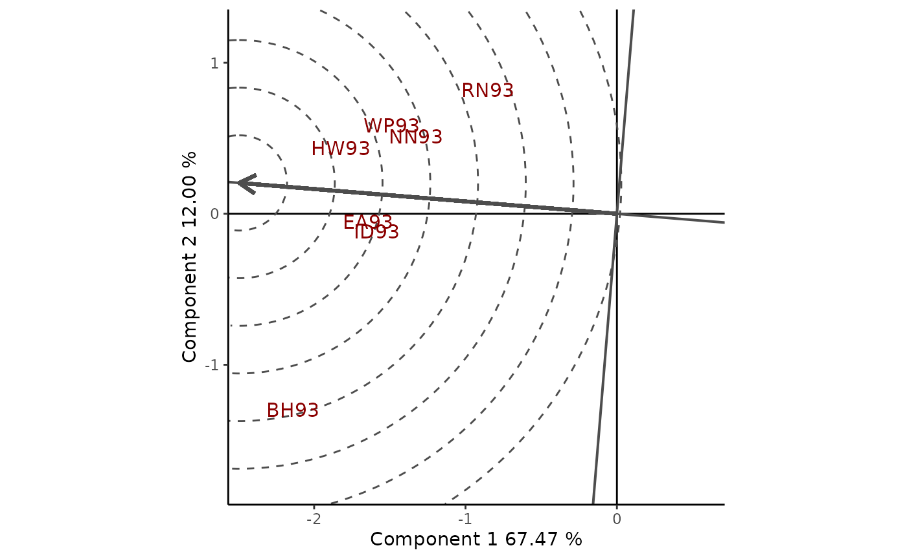

The geneticae package
Statistical Tools for the Analysis of Multi Environment Agronomic Trials
Julia Angelini
Marcos Prunello
Gerardo Cervigni
Centro de Estudios Fotosintéticos y Bioquímicos
Universidad Nacional de Rosario
Rosario, Argentina
Marcos Prunello
Gerardo Cervigni
Centro de Estudios Fotosintéticos y Bioquímicos
Universidad Nacional de Rosario
Rosario, Argentina
2021-09-14
Source:vignettes/a-tutorial.Rmd
a-tutorial.RmdGetting started
You can install the development version from our GitHub repo with:
# install.packages("devtools")
devtools::install_github("jangelini/geneticae")Loading the package. Once the geneticae package is installed, it needs to be loaded by:
Help files. Detailed information on geneticae package functions can be obtained from help files using help(package="geneticae"). The help file for a function, for example imputation can be obtained using ?imputation or help(imputation).
Introduction
Understanding the relationship between crops performance and environment is a key problem for plant breeders and geneticists. In advanced stages of breeding programs, in which few genotypes are evaluated, multi-environmental trials (MET) are one of the most used experiments. Such studies test a number of genotypes in multiple environments in order to identify the superior genotypes according to their performance. In these experimentes, crop performance is modeled as a function of genotype (G), environment (E) and genotype-environment interaction (GEI). The presence of GEI generates differential genotypic responses in the different environments (Crossa et al., 1990; Cruz Medina, 1992; Kang and Magari, 1996). Therefore appropriate statistical methods should be used to obtain an adequate GEI analysis, which is essential for plant breeders (Giauffret et al., 2000).
The average performance of genotypes through different environments can only be considered in the absence of GEI (Yan and Kang, 2003). However, GEI is almost always present and the comparison of the mean performance between genotypes is not enough. The most widely used methods to analyze MET data are based on regression models, analysis of variance (ANOVA) and multivariate techniques. In particular, two statistical models are widely used among plant breeders as they provide useful graphical tools for the study of GEI: the Additive Main effects and Multiplicative Interaction model (AMMI) (Kempton, 1984; Gauch, 1988) and the Site Regression Model (SREG) (Cornelius et al., 1996; Gauch and Zobel, 1997). However, these models are not always efficient enough to analyze MET data structure of plant breeding programs. They present serious limitations in the presence of atypical observations and missing values, which occur very frequently. To overcome this, several imputation alternatives and a robust AMMI were recently proposed in literature.
Although there are a few R packages which tackle different aspects of the analysis of MET data, there aren’t any packages capable of performing all the steps that need to be considered. The geneticae package was created to gather in one place the most useful functions for this type of analysis and it also implements new methodology which can be found in recent literature. More importantly, geneticae is the first package to implement the robust AMMI model and implements new imputation methods not available before. In addition, there is no need to preprocess the data to use the geneticae package, as it can handle different dataset formats. Genotypes, environments, repetitions (if any) and phenotypic traits of interest can be presented in any order and there is no restriction on columns names, as it is the case with previous published packages. Also, extra information that will not be used in the analysis may be present in the datasets. Finally, geneticae offers a wide variety of options to customize the biplots, which are part of the graphical output of these methods.
Datasets
The geneticae package provides two datasets to illustrate the methodology included to analize MET data.
-
yan.winterwheatdataset: yield of 18 winter wheat varieties grown in nine environments in Ontario at 1993. Although four blocks or replicas in each environment were performed in the experiment, only yield mean for each variety and environment combination was available in the dataset obtained from the agridat package (Wright, 2018).## gen env yield ## 1 Ann BH93 4.460 ## 2 Ari BH93 4.417 ## 3 Aug BH93 4.669 ## 4 Cas BH93 4.732 ## 5 Del BH93 4.390 ## 6 Dia BH93 5.178 -
plrvdataset: resistance study to PLRV (Patato Leaf Roll Virus) causing leaf curl. 28 genotypes were experimented at 6 locations in Peru. Each clone was evaluated three times in each environment, and yield, plant weight and plot were registered. This dataset was also obtained from the agricolae package (de Mendiburu, 2020).## Genotype Locality Rep WeightPlant WeightPlot Yield ## 1 102.18 Ayac 1 0.5100000 5.10 18.88889 ## 2 104.22 Ayac 1 0.3450000 2.76 12.77778 ## 3 121.31 Ayac 1 0.5425000 4.34 20.09259 ## 4 141.28 Ayac 1 0.9888889 8.90 36.62551 ## 5 157.26 Ayac 1 0.6250000 5.00 23.14815 ## 6 163.9 Ayac 1 0.5120000 2.56 18.96296
Statistical models for multi-environmental trials
AMMI model
The AMMI model (Gauch, 1988, 1992) is widely used to analyse the effect of the GEI. This model explores a matrix of GEI by performing a singular value decomposition (SVD) on the residuals matrix from a one-way ANOVA with fixed effects for environments and genotypes. The result of the first two multiplicative terms of SVD is often presented in a biplot called GE and represents a two-rank approximation of GE effects.
The rAMMI() function returns the GE biplot. Data in long format is required by this function, i.e. each row corresponds to one observation and each column to one variable (genotype, environment, repetition (if any) and the observed phenotype). If each genotype has been evaluated more than once at each environment, the phenotypic mean for each combination of genotype and environment is internally calculated and then the model is estimated. Extra variables that will not be used in the analysis may be present in the dataset. Missing values are not allowed (but can be imputated, see below).
The GE biplot for yan.winterwheat dataset is shown in Figure 1.
rAMMI(yan.winterwheat, genotype = "gen", environment = "env",
response = "yield", type = "AMMI", footnote = F, titles = F)Figure 1: GE biplot.
The AMMI model, in its standard form, assumes equal weights for all the entries of two-way dataset and that no outliers are present in the data. To overcome the problem of data contamination with outlying observations, Rodrigues et al. (2015) proposed five robust AMMI models, which can be obtained in two stages: (i) fitting a robust regression model with an M-Huber estimator (Huber, 1981) to replace the ANOVA model; and (ii) using a robust SVD or principal components analysis (PCA) procedure to replace the standard SVD. Until now, robust AMMI models were not available in any R package. All robust biplots proposed by Rodrigues et al. (2015) can be obtained using rAMMI() function. The argument type can be used to specify the type of modelo to be fitted ("rAMMI", "hAMMI", "gAMMI", "lAMMI" or "ppAMMI"). Since the sample yan.winterwheat dataset does not present outliers, the conclusions obtained with robust biplots will not differ from those made with the classical biplot (Rodrigues, et al. 2015). Thus, no interpretation of the robust biplots is presented in this tutorial.
Site Regression model
The Site Regression model (SREG, also called genotype plus genotype-by-environment model or GGE model) is another powerful tool for the analysis and interpretation of MET data in breeding programs. GGE explores genotype (G) and EGI effects performing a SVD on the residuals matrix from the one-way ANOVA model with fixed effects for environments. To select cultivars the effect of G and GEI must be considered simultaneously so SREG model is superior to AMMI for the visualization of patterns in MET data.
The GGEmodel() function is a wrapper for the GGEModel() function of the GGEBiplots package (Dumble, 2017) which allows for the presence of repetitions or extra variables in the dataset. All the combinations between genotypes and environments must be present.
GGE1 <- GGEmodel(yan.winterwheat, genotype = "gen", environment = "env",
response = "yield", centering = "tester")The output from GGEmodel() is a list with the following elements:
-
coordgenotype: plot coordinates for all genotypes in each component. -
coordenviroment: plot coordinates for all environments in each component. -
eigenvalues: vector of eigenvalues from each component. -
vartotal: overall variance. -
varexpl: percentage of variance explained by each component. -
labelgen: genotype names. -
labelenv: environment names. -
axes: axis labels. -
Data: scaled and centered input data. -
centering: centering method. -
scaling: scaling method. -
SVP: SVP method.
The result of the first two multiplicative terms of the SVD is often presented in a GGE biplot (Yan et al., 2000), which represents a rank-two approximation of the G + GEI effects. Plant breeders have found GGE biplots to be useful tools for the analysis of mega environment experiments (Yan et al., 2001; Yan and Rajcan, 2002) and genotype and environment evaluation (Bhan et al., 2005; Kang et al., 2006; Yan et al., 2007). The GGE biplot addresses many issues relative to genotype and test environment evaluation. Considering the average performance of each genotype, this plot can be used to evaluate specific and general adaptation. In addition, environments can be visually grouped according to their ability to discriminate among genotypes and their representativeness of other test environments. GGE biplot reveals the which-won-where pattern and allows to recommend specific genotypes for each environment (Yan and Tinker, 2005).
Using the output from GGEmodel(), GGEPlot() builds several GGE biplots, in which cultivars are shown in lower case and environments in upper case. The plot also displays the methods used for centering, scaling and SVD. Optionally, the percentage of G + GEI explained by the two axes can be added as a footnote with footnote = T, as well as a tittle with titles = T. A basic biplot is produced with the option type="Biplot" (Figure 2).
GGEPlot(GGE1, type="Biplot", footnote = F, titles = F)
Figure 2: basic biplot. 78% of the total variability of G + GE is explained.
Breeders usually want to identify the most suitable cultivars for a particular environment of interest. To do this with GGE biplots, Yan and Hunt (2002) suggest making an axis of that environment, drawing a line that passes through environment marker and biplot origin. This can be done setting type="Selected Environment" and providing the name of the environment in selectedE (Figure 3).
GGEPlot(GGE1, type="Selected Environment", selectedE = "OA93",
footnote = F, titles = F)Figure 3: comparison of cultivare performance in a selected environment (OA93).
Another goal of plant breeders is to determine which is the most suitable environment for a genotype Yan and Hunt (2002) suggest plotting a line that passes through the origin and a cultivar of interest. Figure 4 illustrates how to visualize the relative adaptation of that cultivar in different environments. The argument type produces this plot when set to "Selected Genotype", while selectedG can be used to select the genotype.
GGEPlot(GGE1, type="Selected Genotype", selectedG = "Luc",
footnote = F, titles = F)Figure 4: comparison of the performance of cultivar Luc in different environments.
It is also possible to compare two cultivars linking them with a line and a segment perpendicular to it (Figure 5).
GGEPlot(GGE1, type = "Comparison of Genotype",
selectedG1 = "Kat", selectedG2 = "Cas",
footnote = F, titles = F, axis_expand = 1.5)Figure 5: comparison of the cultivars Kat and Cas.
The polygonal view of the GGE biplot proposed by Yan (1999) provides an effective way to visualize the which-won-where pattern of a MET dataset (Figure 6). Cultivars in the vertices are those with the longest vectors, in their respective directions, which is a measure of the ability to respond to environments. The dotted lines perpendicular to the polygon sides divide the biplot into mega environments, each of which has a vertex cultivar, which is the one with the highest yield (phenotype) in all environments found in it.
GGEPlot(GGE1, type="Which Won Where/What", footnote = F, titles = F, axis_expand = 1.5)Figure 6: polygon view of the GGE biplot, showing which cultivars presented highest yiel in each environment.
Selecting cultivars within each megaenvironments will be an issues among plant breeders. According to Figure 6, zav is the best cultivar for environments in one of the megaenvironments and fun in the other. However, breeders do not select a single cultivar in each megaenvironment. Instead, they evaluate all cultivars in order to get an idea of their performance (yield and stability). The GGE biplot based on genotype-focused scaling can be used to visualize both genotype mean performance and stability. This visualization is achieved drawing an environment coordinate (AEC). For example, Figure 7 shows the AEC for the megaenvironment composed of he environments “BH93”, “EA93”, “HW93”, “ID93”, “NN93”, “RN93”, “WP93”. The abscissa represents the G effect and the ordinate GEI associated with each genotype, which is a measure of the variability or instability of the genotype. A greater projection on AEC, regardless of direction, means greater instability.
data <- yan.winterwheat[yan.winterwheat$env %in% c("BH93", "EA93","HW93", "ID93",
"NN93", "RN93", "WP93"), ]
GGE2 <- GGEmodel(data, genotype = "gen", environment = "env",
response = "yield", SVP = "row")
GGEPlot(GGE2, type = "Mean vs. Stability", footnote = F, titles = F)Figure 7: average environment view of the GGE biplot based on genotype-focused scaling, showing mean yield and stability of genotypes.
In the GGE biplot it is also possible to visualize mean yield and stability of genotypes in yield units per se (Figure 8). The ideal cultivar, with the highest yield and absolute stability, is represented by a small circle. This ideal genotype is used as a reference, as it rarely exists. The distance between cultivars and the ideal one can be used as a measure of convenience. Concentric circles help to visualize these distances. In the example, Fun is the closest one to the ideal crop, and therefore the most desirable one, followed by cas and hay, which in turn are followed by rum, ham, rub, zav, del and reb, etc.
GGEPlot(GGE1, type = "Ranking Genotypes", footnote = F, titles = F)Figure 8: Classification of genotypes with respect to the ideal genotype.
Although METs are performed to study cultivars, they are equally useful for the analysis of the environments. This includes several aspects: (i) evaluating whether the target region belongs to one or more megaenvironments; (ii) identifying better test environments; (iii) detecting redundant environments that do not provide additional information on cultivars; and (iv) determining environments that can be used for indirect selection.
In Figure 9 environments are connected to the origin through vectors, allowing us to understand the interrelationships between them. The coefficient of correlation between two environments it is approximated by the cosine of the angle formed by the respective vectors. For example, the angle between the vectors for the environments NN93 and WP93 is approximately 10\(º\); therefore, they are closely related; while RN93 and OA93 present a weak negative correlation since the angle is slightly greater than 90\(º\). The cosine of the angles does not translate precisely into coefficients of correlation, since the biplot does not explain all the variability in the dataset. However, they are informative enough to understand the interrelationship between test environments.
GGE3 <- GGEmodel(data, genotype = "gen", environment = "env",
response = "yield", SVP = "column")
GGEPlot(GGE3, type = "Relationship Among Environments", footnote = F, titles = F)Figure 9: Relationship between environments.
The biplot shown in Figure 10 helps to identify redundant environments. If some environments have small angles, genotype information obtained from these environments should be similar. If this similarity is always present through the years, these environments are redundant and therefore it should be enough to keeo only one of the in the experimentation. Obtaining the same or better information using fewer environments would reduce cost and increase production efficiency.
GGEPlot(GGE1, type = "Ranking Environments", footnote = F, titles = F)Figure 10: classification of environments with respect to the ideal environment.
FALTA DESCRIPCION AGREGAR!!!
GGEPlot(GGE1, type="Discrimination vs. representativeness", footnote = F, titles = F)
Imputation methods
One major limitation of the AMMI and SREG models is that they require a complete two-way data table. Although METs are designed so that all genotypes are evaluated in all environments, missing values are very common due to measurement errors or destruction of plants by animals, floods or harvest problems. In addition, genotypes might be incorporated or discarded during the study because of their promising or poor performance. The imputation() function includes several methods to overcome the problem of missing data, some of which have been recently published and were not available in any R package until now.
To present an example, some observations from the complete yan.winterwheat are deleted:
# Generating missing data
yan.winterwheat[1,3] <- NA
yan.winterwheat[3,3] <- NA
yan.winterwheat[2,3] <- NAImputation of missing values with the "EM-AMMI" method can be performed as follows:
imputation(yan.winterwheat, nPC = 2, genotype = "gen", environment = "env",
response = "yield", type = "EM-AMMI")## BH93 EA93 HW93 ID93 KE93 NN93 OA93 RN93 WP93
## Ann 4.150120 4.150 2.849 3.084 5.940 4.450 4.351 4.039 2.672
## Ari 4.035814 4.771 2.912 3.506 5.699 5.152 4.956 4.386 2.938
## Aug 4.305244 4.578 3.098 3.460 6.070 5.025 4.730 3.900 2.621
## Cas 4.732000 4.745 3.375 3.904 6.224 5.340 4.226 4.893 3.451
## Del 4.390000 4.603 3.511 3.848 5.773 5.421 5.147 4.098 2.832
## Dia 5.178000 4.475 2.990 3.774 6.583 5.045 3.985 4.271 2.776
## Ena 3.375000 4.175 2.741 3.157 5.342 4.267 4.162 4.063 2.032
## Fun 4.852000 4.664 4.425 3.952 5.536 5.832 4.168 5.060 3.574
## Ham 5.038000 4.741 3.508 3.437 5.960 4.859 4.977 4.514 2.859
## Har 5.195000 4.662 3.596 3.759 5.937 5.345 3.895 4.450 3.300
## Kar 4.293000 4.530 2.760 3.422 6.142 5.250 4.856 4.137 3.149
## Kat 3.151000 3.040 2.388 2.350 4.229 4.257 3.384 4.071 2.103
## Luc 4.104000 3.878 2.302 3.718 4.555 5.149 2.596 4.956 2.886
## Reb 4.375000 4.701 3.655 3.592 6.189 5.141 3.933 4.208 2.925
## Ron 4.940000 4.698 2.950 3.898 6.063 5.326 4.302 4.299 3.031
## Rub 3.786000 4.969 3.379 3.353 4.774 5.304 4.322 4.858 3.382
## Zav 4.238000 4.654 3.607 3.914 6.641 4.830 5.014 4.363 3.111
## m12 3.340000 3.854 2.419 2.783 4.629 5.090 3.281 3.918 2.561The other methods available in geneticae are: "EM-SVD", "Gabriel", "WGabriel" and "EM-PCA".
References
Giauffret, C., Lothrop, J., Dorvillez, D., Gouesnard, B., Derieux, M., 2000. Genotype x environment interactions in maize hybrids from temperate or highland tropical origin. Crop Sci. 40, 1004-1012.
Sam Dumble (2017). GGEBiplots: GGE Biplots with ‘ggplot2’. R package version 0.1.1. https://CRAN.R-project.org/package=GGEBiplots
Felipe de Mendiburu (2020). agricolae: Statistical Procedures for Agricultural Research. R package version 1.3-2. https://CRAN.R-project.org/package=agricolae
Sesssion Info
## R version 4.1.1 (2021-08-10)
## Platform: x86_64-pc-linux-gnu (64-bit)
## Running under: Ubuntu 20.04.3 LTS
##
## Matrix products: default
## BLAS: /usr/lib/x86_64-linux-gnu/blas/libblas.so.3.9.0
## LAPACK: /usr/lib/x86_64-linux-gnu/lapack/liblapack.so.3.9.0
##
## locale:
## [1] LC_CTYPE=en_US.UTF-8 LC_NUMERIC=C
## [3] LC_TIME=es_ES.UTF-8 LC_COLLATE=en_US.UTF-8
## [5] LC_MONETARY=es_ES.UTF-8 LC_MESSAGES=en_US.UTF-8
## [7] LC_PAPER=es_ES.UTF-8 LC_NAME=C
## [9] LC_ADDRESS=C LC_TELEPHONE=C
## [11] LC_MEASUREMENT=es_ES.UTF-8 LC_IDENTIFICATION=C
##
## attached base packages:
## [1] stats graphics grDevices utils datasets methods base
##
## other attached packages:
## [1] geneticae_0.1.0
##
## loaded via a namespace (and not attached):
## [1] Biobase_2.52.0 sass_0.4.0 tidyr_1.1.3
## [4] jsonlite_1.7.2 foreach_1.5.1 missMDA_1.18
## [7] bslib_0.3.0 assertthat_0.2.1 highr_0.9
## [10] stats4_4.1.1 yaml_2.2.1 robustbase_0.93-8
## [13] ggrepel_0.9.1 pillar_1.6.2 backports_1.2.1
## [16] lattice_0.20-44 glue_1.4.2 digest_0.6.27
## [19] polyclip_1.10-0 colorspace_2.0-2 htmltools_0.5.2
## [22] pcaPP_1.9-74 FactoMineR_2.4 pkgconfig_2.0.3
## [25] broom_0.7.9 purrr_0.3.4 mvtnorm_1.1-2
## [28] scales_1.1.1 tweenr_1.0.2 ggforce_0.3.3
## [31] tibble_3.1.4 generics_0.1.0 farver_2.1.0
## [34] ggplot2_3.3.5 ellipsis_0.3.2 DT_0.19
## [37] cachem_1.0.6 BiocGenerics_0.38.0 magrittr_2.0.1
## [40] crayon_1.4.1 memoise_2.0.0 evaluate_0.14
## [43] mice_3.13.0 GGEBiplots_0.1.1 fs_1.5.0
## [46] fansi_0.5.0 doParallel_1.0.16 MASS_7.3-54
## [49] textshaping_0.3.5 tools_4.1.1 lifecycle_1.0.0
## [52] stringr_1.4.0 munsell_0.5.0 cluster_2.1.2
## [55] flashClust_1.01-2 pcaMethods_1.84.0 compiler_4.1.1
## [58] pkgdown_1.6.1 jquerylib_0.1.4 bcv_1.0.1.4
## [61] systemfonts_1.0.2 rlang_0.4.11 grid_4.1.1
## [64] iterators_1.0.13 htmlwidgets_1.5.4 leaps_3.1
## [67] labeling_0.4.2 rmarkdown_2.10 gtable_0.3.0
## [70] codetools_0.2-18 DBI_1.1.1 rrcov_1.5-5
## [73] R6_2.5.1 knitr_1.34 dplyr_1.0.7
## [76] fastmap_1.1.0 utf8_1.2.2 rprojroot_2.0.2
## [79] ragg_1.1.3 desc_1.3.0 stringi_1.7.4
## [82] parallel_4.1.1 Rcpp_1.0.7 vctrs_0.3.8
## [85] DEoptimR_1.0-9 scatterplot3d_0.3-41 tidyselect_1.1.1
## [88] xfun_0.25